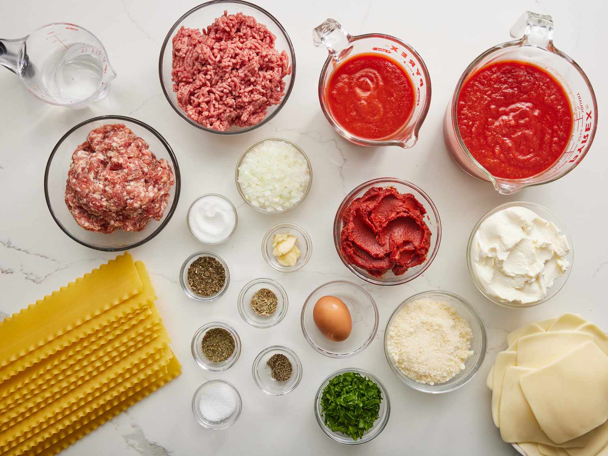
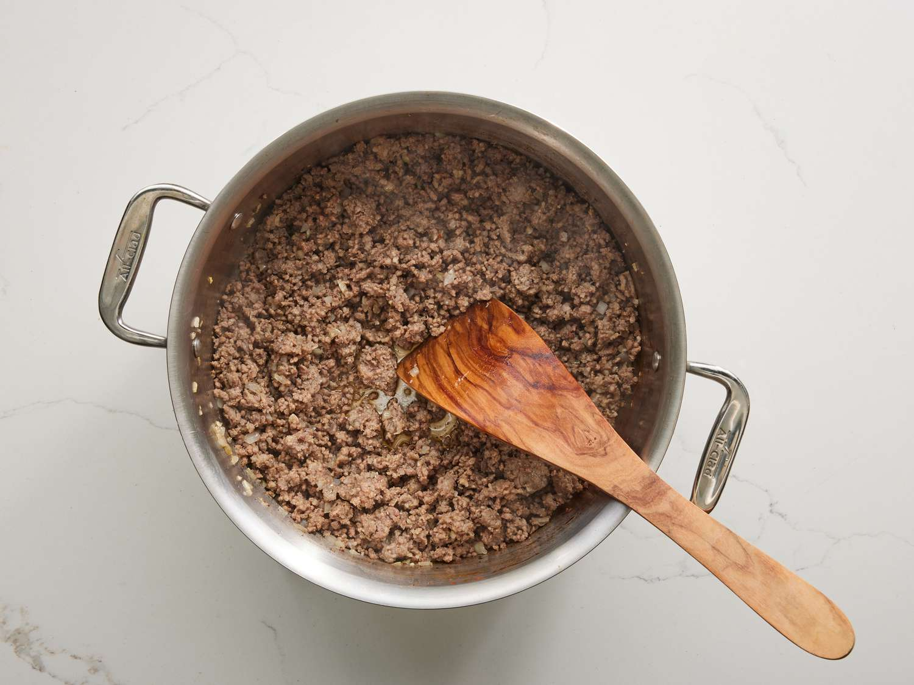
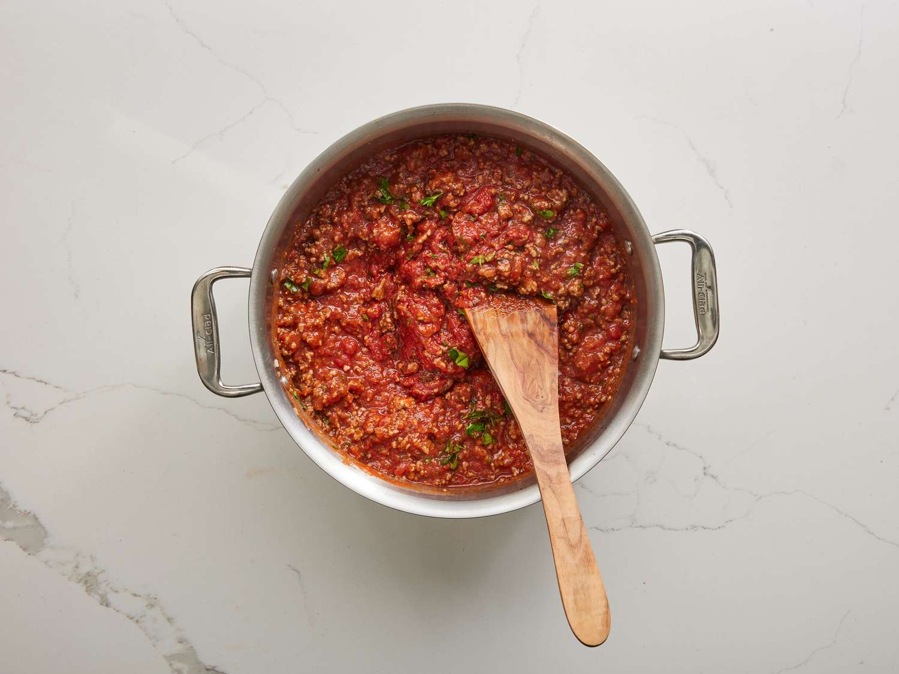
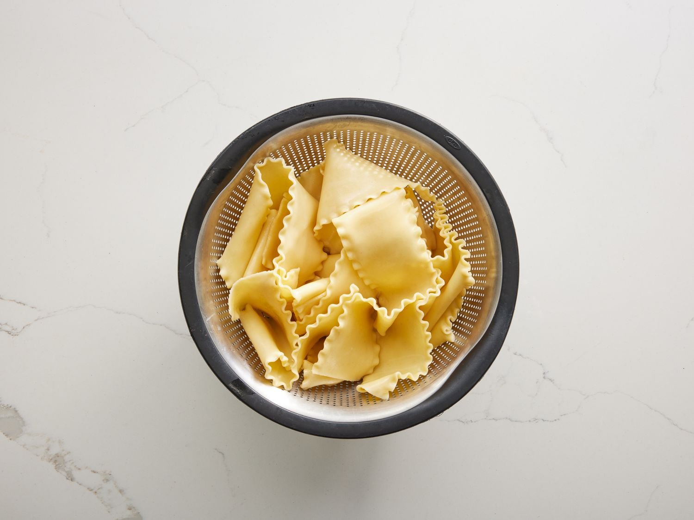
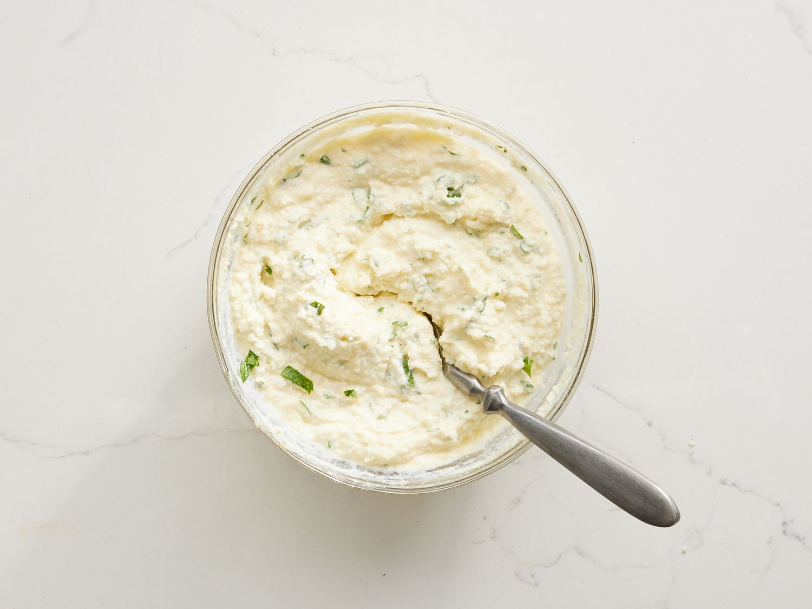
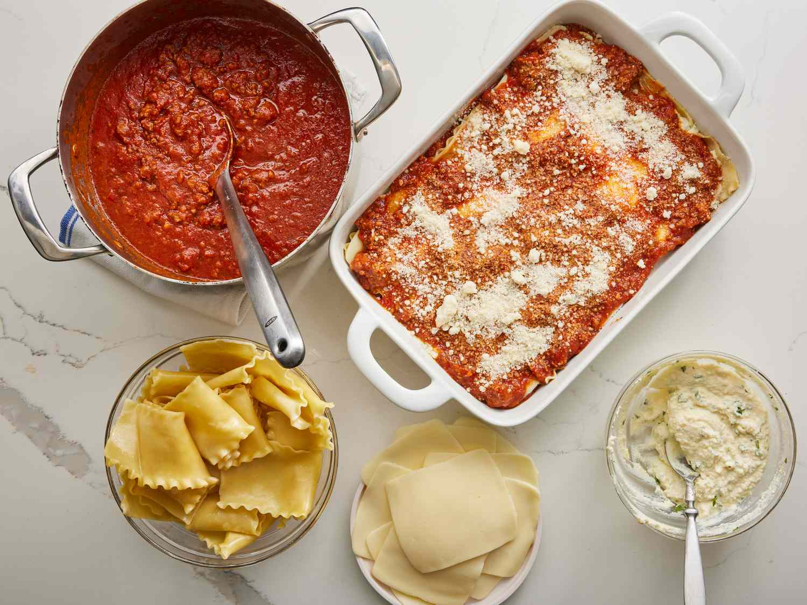
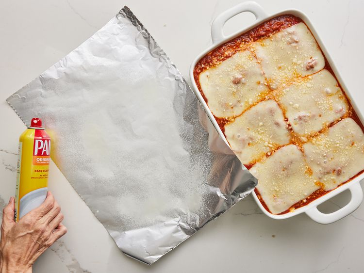
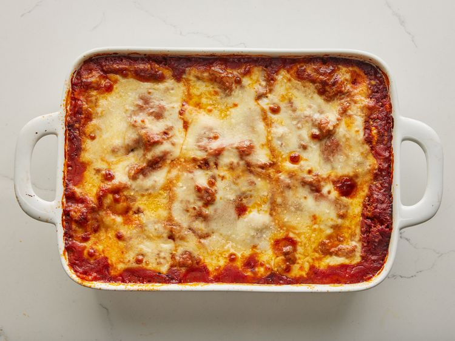
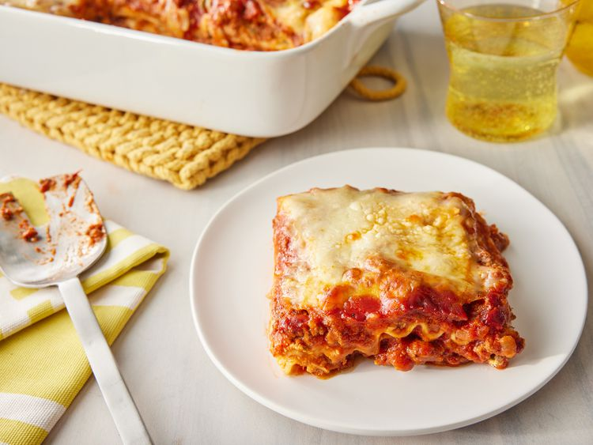

World's Best Lasagna

John Chandler's lasagna recipe submission to Allrecipes 20 years ago.
How to make lasagna: Making lasagna can be time-consuming, but the results are well worth the wait. You'll find a detailed list and step-by-step instructions in the recipe below.
Ingredients
- 1 lb sweet Italian sausage
- 0.75 lb lean ground beef
- 0.5 cup minced onion
- 2 cloves garlic, crushed
- 1 can crushed tomatoes
- 2 cans canned tomato sauce
- 2 cans tomato paste
- 0.5 cup water
- 2 tbsps white sugar
- 4 tbsps chopped fresh parsley, divided
- 1.5 tsps dried basil leaves
- 1.5 tsps salt, divided or to taste
- 1 tsp Italian seasoning
- 0.5 tsp fennel seeds
- 0.25 tsp ground black pepper
- 12 lasagna noodles
- 16 oz ricotta cheese
- 1 egg
- 0.75 lb mozarella cheese, sliced
- 0.75 cup grated Parmesan cheese
Steps
- Gather all your ingredients.

- Cook sausage, ground beef, onion, and garlic in a Dutch oven over medium heat until well browned.

- Stir in crushed tomatoes, tomato sauce, tomato paste, and water. Season with sugar, 2 tablespoons parsley, basil, 1 teaspoon salt, Italian seasoning, fennel seeds, and pepper. Simmer, covered, for about 1 ½ hours, stirring occasionally.

- Bring a large pot of lightly salted water to a boil. Cook lasagna noodles in boiling water for 8 to 10 minutes. Drain noodles, and rinse with cold water.

- In a mixing bowl, combine ricotta cheese with egg, remaining 2 tablespoons parsley, and 1/2 teaspoon salt.

- Preheat the oven to 375 degrees F (190 degrees C).
- To assemble, spread 1 ½ cups of meat sauce in the bottom of a 9x13-inch baking dish. Arrange 6 noodles lengthwise over meat sauce, overlapping slightly. Spread with 1/2 of the ricotta cheese mixture. Top with 1/3 of the mozzarella cheese slices. Spoon 1 ½ cups meat sauce over mozzarella, and sprinkle with 1/4 cup Parmesan cheese.

- Repeat layers, and top with remaining mozzarella and Parmesan cheese. Cover with foil: to prevent sticking, either spray foil with cooking spray or make sure the foil does not touch the cheese.

- Bake in the preheated oven for 25 minutes. Remove the foil and bake for an additional 25 minutes.

- Rest lasagna for 15 minutes before serving.

Home